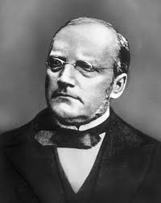

Urodził się 5 maja 1819 roku w Ubielu - miejscowości znajdującej się obecnie na terenie Białorusi. Jego rodzice byli wysoko wykrztałtowani artystycznie i muzycznie, co miało spory wpływ na przyszłe życie małego jeszcze Stasia. Za młodu jego rodzina przeniosła się do Warszawy, gdzie Moniuszko uczył się gry na fortepianie. Zminiał nauczyciela za każdym razem gdy zmienał miejsce zamieszkania. Ostatnim był Berlin, gdzie ukończył studia muzyczne.
Wrócił do Polski, wziął ślub z Aleksandrą Mullerówną i wyjechał do Wilna by tam zamieszkać. Zajmował się nauczaniem gry na fortepianie, a także był organistą w miejscowym kościele. Wkrótce zyskał popularność, która jescze bardziej się wzmogła po sukcesie Halki.
